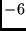
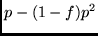
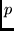

Next: About this document ...
Up: SAM (Sequence Alignment and
Previous: 11 System installation
Contents
12 Parameter descriptions
This section alphabetically explains all the parameters that can be
specified in an init file. Where appropriate, the type of the
parameter and any default value is listed. The default values are
automatically used by the program if the user does not specify any
alternative setting. The dump_parameters option can be used
to verify the default values.
See Section 6.
The drawmodel and prettyalign programs do not use
parameter files.
The SAM-T99 paramaters are discussed elsewhere. See Section 4.
The parameter reading routines will accept variations in
capitalization and the presence or absence of underscores.
SAM supports reading compressed input files.
If any of the file name arguments to the options end in a .gz or .Z
extension. SAM will read the files using the appropriate decompression program.
If an input file does not exist and does not have a .gz or .Z
extension is not found, SAM will try to read from a compressed file with one
of these extensions.
- a2mdots (0 or 1) (1):
- By default (1), align2model will place dots in the sequence
alignment to fill space need for other sequences' insertions. If set
to 0, these dots are not printed. See Section 10.1.
- adjust_score (0, 1 or 2) (2):
- If set, and local or semi-local scoring is performed,
simple null model scores are adjusted according
to the log of the model and sequence length (1) or log of the sequence
length (2), so that final scores are somewhat independent of sequence
length and/or model length. This parameter is used by hmmscore.
See Section 10.2.3.
- adpstyle (1, 4, or 5) (1):
- The dynamic programming style for alignment and multiple domain
alignment used by hmmscore and align2model. Setting to 1
indicates Viterbi alignment, 4 indicates posterior-decoded
alignment on transitions and character emissions, 5 indicates
posterior-decoded alignment on only character emissions . If adpstyle is set for other than 1, 4, or 5, it is changed to 1
(Viterbi). See also the description of dpstyle.
See Section 9.5,
Section 10.1.2, and Section 10.2.4.
- alignfile (string) ():
- A file containing an alignment of sequences for use with modelfromalign, uniqueseq, and sortseq, or as an initial
model for buildmodel. See Section 10.6.
See Section 10.2.
- align_fim (0 or 1) (0):
- Add FIMs to the ends of a model generated by modelfromalign
or an alignfile in buildmodel. See Section 10.6.
- alignment_weights (string) ():
- A file containing sequence weights for alignments used to form initial
models with buildmodel or models with modelfromalign. The external weights have precedence over the
internal ones, but a warning message will be generated unless aweight_method is set to zero. See Section 9.4.
- alignshort (integer) (-1):
- When less than 0 (default), multiple domain search produces an alignment file
that copies the entire sequence for each copy of the domain occurring
within the sequence. When 0, only the region matching the model is
printed. When greater than zero, that many characters to the left and
the right of the domain are also printed to the file.
In both cases, sequence IDs in the new file can be used to locate where
the hmmscore found copies of the model. See Section 10.2.4.
- alphabet (string) (protein):
- This system supports 3 alphabets: DNA, RNA or protein. The protein
alphabet is the default, and does not need to be specified. The
abbreviation a
may be used in place of alphabet.
If unset, the first train, test, or db file is checked to see if the alphabet can be
determined from the data. A comma-separated list of alphabets is
required for using multi-track HMMs.
See Section 7.1
and Section 10.2.5.
- alphabet_def (string) ():
- The alphabet_def variable can be used to define an alphabet of
2 to 25 letters plus a (require) all-matching wildcard character. In
the quoted string argument, both an alphabet name and the list of
characters, with the wildcard last, must be specified. See Section 7.1.1.
- anneal_length (float) (0.8):
- Indicates the speed with which noise should be decreased to zero. If
greater than 1, decrease linearly over anneal_length re-estimates. If
less than one, decrease exponentially. See Section 9.1.
- anneal_noise (float) (5):
- Amount of noise to add to the model (decreased linearly or
exponentially according to anneal_length. See Section 9.1.
- auto_fim (0 or 1) (1):
- Cause hmmscore and align2model to automatically add FIMs to
the model (and to the user's null model, if used) before scoring when
null model subtraction
is used or fully local scoring (SW is 2) is used. Also, in
alignments, the FIM-induced delete state is automatically removed
whenever auto_fim is set, regardless of whether or not FIMs
were originally present in the model.
See Section 10.2.
- aweight_bits (float) (0.5):
- Target bits per column to save in determining alignment sequence
weighting.
See Section 9.4.3.
- aweight_exponent (float) (0.5):
- Exponent in determining alignment sequence weighting.
See Section 9.4.3.
- aweight_method (0, 1, 2, or 3) (1):
- Internal weighting method for initial alignment provided to buildmodel or modelfromalign. 0 (none), 1 (karplus), 2 (henikoff), or 3 (flat).
If non-zero and an alignment_weights file is specified, the
external weights are used and a warning message is printed to standard error.
See Section 9.4.3.
- binary_output (0 or 1) (0):
- Tells model-generating programs to write models in text format
if set to 0 or a binary format if set to 1. Default is text or 0.
See Section 8.4.4.
- constraints (string) ():
- Specify a constraints definition file to be read. This option maybe
specified multiple times.
See Section 9.6.
- constraints_out (string) ():
- Specify the name for a constraints definition file to create.
See Section 9.6.
- constraints_from_align (0 or 1) (0):
- If a true value is specified, constraints will be be created for all
aligned positions when a model is created from an alignment.
See Section 9.6.
- cutinsert (float) (0.5):
- If this fraction of sequences use an insert
state, surgery will replaced with one or more match states.
See Section 9.2.
- cutmatch (float) (0.5):
- When fewer than this fraction of sequences use a match state, surgery
will delete the state. See Section 9.2.
- db (string) ():
- A file containing sequences that are to be scored against a model in
hmmscore or aligned to a model in align2model. Multiple
instances of the
db variable add to the list of database files, rather than
replacing the previous db file name.
A comma-separated list of parallel databases, one per track, is
required for multi-track HMMs.
See Section 10.2
and Section 10.2.5.
- dbsize (integer) (0):
- When greater than 0, this value is used in the calculation of E-values rather
than the number of sequences that are read in to hmmscore. This
is useful for correctly calculating E-values when multiple scoring
runs are performed, and to avoid having to perform a complete reading
of the database twice, once to calculate the number of sequences, and
second time to score the sequences.
See Section 10.2.
- del_jump_conf (float) (1.0):
- Confidence in the regularizer for transitions leaving a delete state.
The regularizer's transition values are multiplied by this number.
See Section 8.1.
- distfile (string) ():
- File with already-calculated sequence distances for use with the makehist, makeroc, makeroc2, and sortesq programs.
See Section 10.2,
Section 10.10, and Section 10.11.7..
- distfile2 (string) ():
- A second file with already-calculated sequence distances for use with
the makehist, makeroc or makeroc2.
See Section 10.10.
- dpstyle (0, 1, 2, 3, 4, or 5) (0):
- Flavor of internal dynamic programming for scoring and training. 0
indicates forward-backward (see adpstyle for alignment).
(EM) sum-of-all-paths, 1 indicates Viterbi single best path, 2
indicates EM with the posteriors saved in a .pdoc file, 3 (for
use with grabdp, but presently identical to 0) indicates EM
outputting the frequency counts of each sequence in its
own .freq file, 4 indicates most probable alignment
(posterior-decoded alignment on transitions and emissions), and 5
indicates most probable alignment (posterior-decoded alignment on
emissions only).
See Section 9.5,
Section 10.2, and Section 10.1.
- dump_match_probs (0 or 1) (0):
- When the grabdp program is run with this flag set, it generates
an RDB file listing the amino acid posterior probabilities for each node,
and the amino acid priors. Priors are listed with the node label ``FREQAVE''.
- dump_parameters (0, 1, or 2) (0):
- Normally, only modified parameters are printed to the output file. If
this is set to 1, all parameters are printed. If 2, and specified
alone on the command line, buildmodel and align2model will
dump parameters and exit. Because in this case
an alphabet is not specified and a regularizer not created, a setting
of 2 will not reveal the default
regularizer. See Section 8.4.
- Emax (float) (0.001):
- When a selection
variable includes 4 in its binary representation, Emax is used
to determine what sequences are selected. Also, when select_score/seq
 , sequences with an E-value better than Emax
are selected. See Section 10.2.
, sequences with an E-value better than Emax
are selected. See Section 10.2.
- family_base_file (string) ():
- If non-null, and sequence_weights and family_specific are specified, initial
models are read in from the files whose names are created by appending
.i.mod, where i is an integer corresponding to the
family number. For example, if there are three families and the base
name is test, the family models will be read in from test.0.mod, test.1.mod, and test.2.mod.
The first model in the file (of any type, including MODEL,
REGULARIZER, NULLMODEL, and FREQUENCIES) is used. An error will
result if the models are of different lengths.
See Section 9.4.
- FIM_method_train (0, 1, 2, 3, 5, 6) (-1):
- During the model building process, one may employ an initial model
that contains FIMs. The table probabilities can readily be
changed to reflect different distributions.
Negative values only cause changes to the tables when models are
created by the program, rather than being read in. The default setting of -1
uses the letter frequencies in the training set when generating new
models. See Section 8.6.
- FIM_method_score (0, 1, 2, 3, 5, 6) (-6):
- Similar to FIM_method_train, except that the insert probabilities
in the FIMs are changed before sequences are scored against the model.
Negative values only cause changes when FIMs are added to the model.
When set to 0, it is treated as  for adding FIMs.
The default method of -6 uses the geometric average of match state
probabilities.
See Section 10.2.1.
- fimstrength (float) (1.0):
- A factor by which to multiply the FIM letter emission probabilities.
If set to 2.0, for example, each letter will have twice the
probability of being generated as in the normalized insert state. This
can be used to encourage the use of FIMs. The value is also
applied to simple null models. When set to a value less
than 0, the absolute value of fimstrength is applied to all
insert states, FIM or otherwise. See Section 8.5.
- fimtrans (float) (0.0):
- When 0.0, the FIM's insert to insert probability is 1.0.
When greater than 0.0, a factor by which to multiply the model's
geometric average match to match probability to produce the FIM's
insert-to-insert probability. When
less than 0.0, the FIM is adjusted as according to the absolute value
of fimtrans, and the non-FIM insert-to-insert probability is
set to , where  is the regularized and
normalized frequency counts for the transition and
 is the
FIM insert-to-insert transition.
See Section 8.5.
is the
FIM insert-to-insert transition.
See Section 8.5.
- fisher_feature (string) (match_prior simple):
- Specifies the type of Fisher score vector features
the get_fisher_scores will be generated.
The following value are valid. This parameter maybe specified multiple
times.
- trans - Compute gradients from the model transition parameters.
- insert - Compute gradients from the model insert parameters.
- match - Compute gradients from the model match parameters
- match_prior - Compute gradients from a mixture decomposition
of the model match parameters with the prior library use to train
the model.
- simple - Include the simple NLL-NULL score as a feature.
If this parameter is not explictly specified, match_prior and
simple are used. See Section 10.5.
- fracinsert (float) (1.0):
- When an insert state is being replaced, surgery will replace it with
the average number or characters generated by the insert state
multiplied by this number. See Section 9.2.
- FREQUENCIES () ():
- A model structure that has frequency counts rather than probabilities.
Output by buildmodel if the print_frequencies parameter
is set to 1. The drawmodel program is the only program that
can use frequencies as input. See Section 8.4..
- histbins (integer) (10):
- Number of bins used by the makehist program. See Section 10.10.1.
- genprot_prior (string) (rsdb-comp2.32comp):
- Dirichlet mixture for randomly generated protein sequences output by
genseq and used in HMM model calibration.
See Section 10.11.2
and Section 10.2.9.
- genehl2_prior (string) (t99-2d-comp.9comp):
- Dirichlet mixture for randomly generated secondary structure alphabet
EHL2 sequences output by genseq and used in HMM model
calibration.
See Section 10.11.2,
Section 10.2.9, and Section 7.1.
- gs_mean_log_len (float) (5.4151):
- Logarithm of mean sequence length used for randomly generated protein
sequences output by genseq and used in HMM model calibration.
See Section 10.11.2
and Section 10.2.9.
- gs_sd_log_len (float) (1.03632564):
- Logarithm of standard deviation of sequence length used for randomly
generated protein sequences output by genseq and used in HMM
model calibration.
See Section 10.11.2
and Section 10.2.9.
- id (string) ():
- A sequence identifier, used to restrict align2model or hmmscore to only considering specific
sequences. Multiple occurrences of the id parameter are added
to the list of sequence identifiers, rather than replacing the value
of id.
- initial_noise (float) (-1.0):
- When greater than zero, amount of
noise to add for the first iteration. See Section 9.1.
- ins_jump_conf (float) (1.0):
- Confidence in the regularizer for transitions leaving an insert state.
The regularizer's transition values are multiplied by this number.
See Section 8.1.
- insconf (float) (10000):
- Confidence in the regularizer for character probabilities in an insert
state. The high default means that the regularizer will overpower the
actual counts determined by aligning sequences to the model. The
regularizer's character insert values are multiplied by this number.
See Section 8.1.
- insert (string) ():
- Insert another parameter file. The single character i may
be used in place of insert. See Section 6.
- insert_file_dna (string) ():
- Insert another parameter file if the current alphabet has been set to
DNA. This is particularly useful for alphabet-specific regularizers.
See Section 6.
- insert_file_protein (string) ():
- Insert another parameter file if the current alphabet has been set to protein.
This is particularly useful for alphabet-specific regularizers.
See Section 6.
- insert_file_rna (string) ():
- Insert another parameter file if the current alphabet has been set to RNA.
This is particularly useful for alphabet-specific regularizers. See Section 6.
- Insert_method_train (0, 1, 2, 3, 5) (-1):
- Similar to FIM_method_train except that the insert probabilities
are changed in the nodes that are not FIMs.
Negative values only cause changes to the tables when models are
created by the program, rather than being read in.
The default method -1 uses the letter frequencies in the training set
when generating models. If the model or regularizer
includes a GENERIC node, then its match and insert tables are also
filled in with these values.
See Section 8.6.
- Insert_method_score (0, 1, 2, 3, 5, 6) (0):
- Similar to FIM_method_score except that the insert probabilities
are changed in the nodes that are not FIMs.
Negative values only cause changes to the tables when models are
created by the program, rather than being read in.
The default method 0 is
to not change the insert tables during scoring.
See Section 10.2.1.
- internal_weight (0, 1, 2) (1):
- Use internal maximum discrimination sequence weighting.
Automatically turned off if not explicitly set and external weights
are used. See Section 9.4.4.
- jump_in_prob (float) (1.0):
- The probability cost of jumping into the center of the model
when the SW option is set.
See Section 10.2.3.
- jump_out_prob (float) (1.0):
- The probability cost of jumping out of the center of the model when
the SW option is set.
See Section 10.2.3.
- keepannotations (0, 1) (1):
- Keep sequence annotations for sequence output. Short versions of the
annotations are included in distance files as well. Annotations
are frequently longer than the sequences themselves, so
setting this to 0 can save considerable amounts of memory.
- kestrel_fallback (0 or 1) (1):
- Enables or disables fallback into sequential mode if a Kestrel is board is
not available after the specified number of retries or if features
not implemented on Kestrel are requested.
See Section 10.2.
- kestrel_min_model_len (integer) (0):
- Specifies the minimum model length to use with Kestrel implementation of
hmmscore EM scoring.
Models smaller than this value will be be scored using the sequential
algorithm. This is useful as small models may be slower on Kestrel.
See Section 10.2.
- kestrel_remote_db_dir (integer) ():
- Specifies the remote directory containing the sequence databases in Kestrel
format. This should be in Windows-NT syntax, for example
\\merlin\data.
See Section 10.2.
- kestrel_retry_cnt (integer) (0):
- Specifies the number of times to retries if a Kestrel board is not available.
See Section 10.2.
- kestrel_retry_time (integer) (0):
- Specifies the number of seconds to wait between retries when Kestrel board is
not available.
- kestrel_use_simulator (integer) (0):
- Use the Kestrel simulator. This is useful when debugging the SAM Kestrel code.
The number of simulated PEs will be set to the minimum required to hold the
model.
See Section 10.2.
- kestrel_num_extra_pe (integer) (0):
- When using the Kestrel simulator for debugging SAM, increase the number of
simulated PEs by the specified number.
See Section 10.2.
- kestrel_dual_mapping (integer) (-1):
- Used for debugging Kestrel dual mapping code. When set to -1, dual
mapping is selected if the model will fit in Kestrel PE array. If
0, then the dual mapping algorithm is never used. If 1, then the
dual mapping is always used with an error generated if the model
will not fit.
See Section 10.2.
- lambda (float) (1.0):
- Scaling factor for HMM
e-value calculations. Best set using the calibrate option of
hmmscore. For pathprob output scaling use pplambda,
and for Smith & Waterman E-value scoring, use swlambda. See Section 10.2.9.
- logo_auto_size (0/1) (0):
- Set to 1 to resize the logo to a single 8.5 by 11 page.
See Section 10.9.3.
- logo_bars_per_line (integer) (0):
- Number of bars per line. Default setting of 0 allows
variance for cosmetic reasons.
See Section 10.9.3.
- logo_bw (0/1) (0):
- If set to 1, make a black and white logo, ignoring color information.
See Section 10.9.3.
- logo_captions (filename) ():
- A file of captions. Each caption has two integers
(start and end bars) on one line, and the caption on
the following line. Captions can overlap.
See Section 10.9.3.
- logo_captionf (filename) ():
- Captions as above, but taken from a FASTA sequence.
Each run of identical characters will be collapsed into
a single caption. Intended for secondary structure.
See Section 10.9.3.
- logo_captionf_color (filename) ():
- Colors for the caption FASTA format file logo_captionf.
Normally installed files include protein.colors,
nucleotide.colors, and stride.colors. If not specified,
black will be used.
See Section 10.9.3.
- logo_color_file (filename) ():
- Color file for the characters. Internal defaults exist
for protein, nucleotide, and secondary structure. Each line has a
character and 3 RGB numbers between 0.0 and 1.0, inclusive, but, not
more than 9 characters. The pound sign (#) is a comment indicator.
See Section 10.9.3.
- logo_font (fontname) (Courier):
- Postscript font for logo letters.
See Section 10.9.3.
- logo_savings (filename) ():
- Use a bit savings file for logo creation rather than a
SAM modelfile. Savings files have one line per bar of:
(bits label percentage label percentage ... newline)
where `bits' is the total bar heigth, labels are single
characters, and percentages are of the bar height.
See Section 10.9.3.
- logo_scale (float) (20.0):
- Vertical scale in points per bit of the logo.
See Section 10.9.3.
- logo_sections (string) ():
- A string (e.g.
"3-8,12,15") indicating which bars to display.
See Section 10.9.3.
- logo_sig_height (float) (1.0):
- Height in points of smallest charector other than X to display.
See Section 10.9.3.
- logo_start_num (integer) (1):
- The sequence index of the first bar in the logo.
See Section 10.9.3.
- logo_title (string) (runname):
- Title of the logo. Default is the current runname.
See Section 10.9.3.
- logo_title_font (fontname) (Times-Roman):
- Postscript font for the logo title.
See Section 10.9.3.
- logo_under_file (filename) ():
- A file with one FASTA-format sequence, to provide lablels, such as
amino acid names in a sequence, one character per logo bar.
Useful for visually comparing a sequence and a model.
See Section 10.9.3.
- logo_under_color (filename) ():
- A color file for use with the underfile sequence.
Normally installed files include protein.colors,
nucleotide.colors, and stride.colors. If not specified,
black will be used. PRIOR_PATH is searched for the file if not in
the current directory. See Section 10.9.3.
- max_seq_length (integer) (2500):
- Used to specify maximum sequence length for Kestrel database
processing and the maximum sequence length for splitseq database
splitting. See Section 10.11.5.
- mainline_cutoff (float) (0.5):
- Changing this value will set both cutmatch and cutinsert
to the new value. See Section 9.2.
- many_files (0-7) (0):
- When zero, all the output of buildmodel is sent to the
.mod file.
If the binary expansion of many_files includes a
'1' (e.g., 1, 3, 5, 7), buildmodel will create multiple files
for the probability model, frequency model, and the run statistics.
If the binary expansion of many_files includes a
'2' (e.g., 2, 3, 6, 7), the hmmscore score information (.dist)
is sent to standard output.
If the binary expansion of many_files includes a
'4' (e.g., 4, 5, 6, 7), the hmmscore multiple domain score
information (.mstat) is sent to standard output.
See Section 5,
Section 10.2.2, and Section 10.2.4.
- match_jump_conf (float) (1.0):
- Confidence in the regularizer for transitions leaving a match state.
The regularizer's transition values are multiplied by this number.
See Section 8.1.
- matchconf (float) (1.0):
- Confidence in the regularizer for character probabilities in a match
state. The regularizer's character match values are multiplied by
this number. This variable is ignored if a prior library is used.
See Section 8.1.
- maxinserts (integer) (100):
- In buildmodel, the maximum number of states inserted after
any node by the surgery. See Section 9.2.
- maxmem (integer) (0):
- Maximum size of dynamic programming array to use for training and
alignment. See Grice, Hughey, and Speck, and Tarnas and Hughey
CABIOS papers for more
information on the algorithm used. Depending on system configuration,
performance may increase with higher values. If set to zero (the
default), SAM will always use the smallest possible amount of space.
- maxmodlen (integer) (0):
- When starting with multiple, randomly generated models, the longest
model to use. If set to 0 (the default), the value is calculated as
10% above the average sequence length when needed. See Section 8.4.1.
- mdNLLnull (float) (-10.0):
- Criterion by which subsequences are judged to be matches to a single
motif (model) during a multiple domain alignment if there is a 1 in
the bit pattern of select_md. All occurrences for which NLL-NULL
is better than the specified value are considered matches.
See Section 10.2.4.
- mdNLLcomplex (float) (-10.0):
- Criterion by which subsequences are judged to be matches to a single
motif (model) during a multiple domain alignment if there is a 2 in
the bit pattern of select_md. All occurrences for which
NLL-NULL user's null or reverse null model score is better than the
specified value are considered matches.
See Section 10.2.4.
- mdEmax (float) (0.01):
- Criterion by which subsequences are judged to be matches to a single
motif (model) during a multiple domain alignment if there is a 4 in
the bit pattern of select_md. All occurrences for which
reverse sequence null model e-value is better than the
specified value are considered matches.
See Section 10.2.4.
- minmodlen (integer) (0):
- When starting with multiple, randomly generated models, the shortest
model to use. If set to 0 (the default), the value is calculated as
10% below the average sequence length when needed. See Section 8.4.1.
See Section 8.4.1.
- MODEL () ():
- Specify an initial model. See Section 8.4..
- model_abort_length (integer) (10000):
- In buildmodel, if the initial model length is greater than this
number, an error message is printed and the program is aborted. This
is
to avoid giant models that will never complete training because of
their memory or execution time requirements.
- model_file (string) ():
- If non-null, this file
is read for an initial model. The first model in the
file (of any type, including MODEL, REGULARIZER, NULLMODEL, and
FREQUENCIES) is used. This will override any models present in
inserted files. See Section 5.
- modellength (integer) (-1):
- When greater than 0, sets the model length to a specific value in buildmodel.
(overridden if a model or regularizer without a GENERIC node is
present). If equal to 0 and maxmodlen is less than 1, all
model lengths are set to the average length of the training
sequences. If less than 0, model
length(s) are set to a random value between minmodlen
and maxmodlen according to randseed. These two bounds will
default to 90% and 110% of average sequence length if maxmodlen is less than 1. See Section 8.4.1.
- model_library (string) ():
- Specify a library of models for scoring or calibration. See Section 10.2.9.
- modlib_absolute (0/1) (1):
- Use absolute path names when creating a model library file. See Section 10.2.9.
- Motifcutoff (float) (0.5):
- In multiple motif search, fragments which are smaller than this fraction of the
model length are not considered for further processing. Further,
processing stops if a fragment of length less than the square of Motifcutoff is the best match (this is needed when using SW scoring
with weak thresholds).
See Section 10.2.4.
- NLLnull (float) (-10.0):
- If a selection variable is odd, this value is checked against a
sequence's simple null model score.
See Section 10.2.
- NLLcomplex (float) (-10.0):
- If a selection variable includes 2 in its binary representation, this
value is checked
against a sequence's user or reverse sequence null model
score.
See Section 10.2.
- NLLfile (string) ():
- Alias for distfile.
- NLLfile2 (string) ():
- Alias for distfile2
- Nmodels (integer) (3):
- Multiple initial models can be trained simultaneously, with the best
one being used for surgery and further training. See Section 8.4.1.
- NscoreSeq (integer) (100000):
- Maximum number of sequences to be read by the hmmscore or align2model program.
- Nseq (integer) (10000):
- Maximum number of sequences to be read from any of the up to four sequence
files or a database files in buildmodel. See Section 7.3.
- nsurgery (integer) (3):
- Maximum number of surgeries to perform. Each surgery will result in a
full EM cycle until stopcriterion or reestimates is reached.
- Ntrain (integer) (0):
- Number of sequences to train on. If zero, all sequences that were
read from the files train and train2 (up to a limit of
Nseq per file) form the training set. If Ntrain is
greater than than the number of sequences read in from the files train, train2, test, and test2, all sequences are
used for training. If Ntrain is less than the total number of
sequences read in from the four files, all the sequences are randomly
partitioned (using trainseed) into the training set with Ntrain sequences, and of the remaining sequences (i.e., whether or
not a sequence occured in a training file or a test file is ignored).
See Section 7.3.
- nucleotide_prior (string) ():
- The prior library to use if the RNA or DNA sequences are being
modeled and prior_library has not been set. See Section 8.1.
- NULLMODEL () ():
- Identifies a user defined null model in a model file. The parameter
subtract_null must be set to 3 to use this null
model. See Section 10.2.
- nullmodel_file (string) ():
- If non-null, this file
is read for a user's null model. The first model in the
file (of any type, including MODEL, REGULARIZER, NULLMODEL, and
FREQUENCIES) is used. This will override any null models present in
inserted files. To use this null model, subtract_null must be
set to 3. See Section 5.
- null_score_weight_scale (float) (10.0):
- Used with get_fisher_scores to
weigh a sequences Fisher scores by how closely they match the model.
If non-zero weigh the gradients according to the sequence NLL-NULL score,
scaled by this parameter. Each gradient is multiplied by
sigmoid(-score/null_score_weight_scale), where sigmoid
is the logistic function. See Section 10.5.
- percent_id (float) (1.0):
- For alignments passed to uniqueseq, specifies fraction
identity to use for deleting sequences.
If percent_id is negative, a message is printed about each sequence
that is dropped.
See Section 10.11.8.
- plotcolumn (integer) (3):
- Column of score file to use in calculating plots. Length (0), simple
null model (1), complex or reverse null model (2), or Evalue (3).
See Section 10.10.
- plotleft (float) (0.0):
- Lowest X axis value on a graph generated by gnuplot. The X axis
is calculated internally if plotleft=plotright. Used
in conjunction with makehist, makeroc and makeroc2.
See Section 10.10.
- plotline (float) (0.0):
- Creates a vertical line at this value in a graph generated by gnuplot
if plotline is nonzero. Used in conjunction with makehist, makeroc and makeroc2. See Section 10.10.
- plotmax (float) (0):
- Highest Y axis value on a graph generated by gnuplot. The Y axis
is calculated internally if plotmax=plotmin. Used
in conjunction with makehist, makeroc and makeroc2.
See Section 10.10.
- plotmin (float) (0):
- Lowest Y axis value on a graph generated by gnuplot. The Y axis
is calculated internally if plotmax=plotmin. Used
in conjunction with makehist, makeroc and makeroc2.
See Section 10.10.
- plotnegate (int) (0):
- Negates the scores on a graph generated by gnuplot if set to 1.
Used in conjunction with makehist, makeroc and makeroc2.
See Section 10.10.
- plotps (int) (1):
- Creates a postscript file runname.ps if set to 1. When set to 0, only a .plt
file is generated. A square plot postscript file is generated for a setting
of 2. For options 1 and 2, the .data and .plt files used to create the
postscript file are deleted. When set to 3, the postscript file is generated
and the .data and .plt files are retained.
Used in conjunction with makehist, makeroc and makeroc2.
See Section 10.10.
- plotright (float) (0.0):
- Highest X axis value on a graph generated by gnuplot. The X axis
is calculated internally if plotleft=plotright. Used
in conjunction with makehist, makeroc and makeroc2.
See Section 10.10.
- pplambda (float) (0.34657):
- Scaling factor for pathprobs
output scaling. For hmmscore E-value scoring use pplambda or
swlambda. See Section 10.7.
- print_all_models (0 or 1) (0):
- When set, models are printed after each iteration
of the forward-backward procedure. Models are printed to files of the
form
runname.a.mrrr.mod, where `mrrr' is the catenation of the
number of the model (or 1 if only one model is being estimated at a
time) and the re-estimate number. This variable can be toggled at
runtime by sending a SIGUSR2 signal to the program, providing a
means to look at intermediate results while the program is running or
checkpointing a program run.
- print_all_weights (0 or 1) (0):
- When set, a weight output file is generated after each iteration
of the forward-backward procedure. Weights are printed to files of
the form runname1.weightoutput, where `1' is the number of
the iteration.
- print_frequencies (0 or 1) (0):
- If this option is set, the frequency counts for each state will be
printed as well as the model.
- print_surg_models (0 or 1) (0):
- When set, models are printed after each surgery (surgery occurs after
a sequence of EM re-estimates). Models are printed to files of the
form
runname.s.rr.mod, where `rrr' is the re-estimation index for
the run. When surgery is used, a single winning model is
automatically selected after the first EM re-estimation loop if
multiple initial models are used. This variable can be toggled at
runtime by sending a SIGUSR1 signal to the program.
- prior_library (string) ():
- When set, use Dirichlet mixture priors to regularizer the models.
Transition costs and insert states are still regularized by the
default (or specified) regularizer, but match states are regularized with
Dirichlet mixtures.
The matchconf variable is ignored if a prior library is used,
in favor of the prior_weight variable. If prior_library is not set and protein_prior or nucleotide_prior is set, the indicated prior library is used.
If neither is set, and proteins are being modeled, and internal
default prior library is used.
See Section 8.1.
- prior_weight (float) (1.0):
- Weight of the prior library, if it is used. See Section 8.1.
- protein_prior (string) ():
- The prior library to use if the proteins are being modeled and prior_library has not been set. If not set, and proteins are being
modeling, an internal default will be used. See Section 8.1.
- randseed (integer) (-1):
- Random seed for noise generation and for selection
of initial model lengths if modellength is less than one. The
default value causes the process's pid to be used, which will then be
printed to the output file to enable replication of results.
- rdb (0 or 1) (0):
- Create the score file in RDB format with the extension .dist-rdb
rather than the standard .dist format.
See Section 10.2.
- randomize (integer) (50):
- Determines how noise is added to
the model. See Section 9.1.
- read_smooth (0 or 1) (0):
- Tells hmmscore whether or not to read a smooth curve
from smooth_file, or its default (runname.smooth).
See Section 10.2.
- reestimates (integer) (40):
- Maximum number of re-estimates to perform after a surgery. Generally,
this should be set higher than the number of iterations that have noise.
See Section 9.
- reglength (integer) (-1):
- Similar to modellength, sets the length of the regularizer.
Usually not needed.
See Section 8.4.1.
- REGULARIZER () ():
- Specify an initial regularizer. See Section 8.4.
- regularizer_file (string) ():
- If non-null, this file
is read for a single-component regularizer. The first model in the
file (of any type, including MODEL, REGULARIZER, NULLMODEL, and
FREQUENCIES) is used. This will override any regularizers present in
inserted files. See Section 5.
- rerun (integer) (-1):
- The program optimizes Nmodels models until the first `surgery',
and then continues with the best one. Sometimes it is interesting
to see how the second best would have done. If the second
best is number 4 (starting from 0!), a setting this parameter to 4
would optimize that model. Models can also be accessed using one
print_all_models.
- retrain_noise_scale (float) (0.1):
- If an initial model or alignment is passed to buildmodel, initial_noise (or anneal_noise if initial_noise is
unspecified)is scaled by this multiplier, which must be between 0.0
and 1.0. See Section 9.1.
- segments (integer) (1):
- Number of segments hmmscore should logically split database
into. Segmentation is based on number of
sequences. See Section 10.2.6.
- segment_number (integer) (1):
- Segment number among segments. See Section 10.2.6.
- segment_size (integer) (1000):
- Number of sequences read in at a time and given to one of the
segments. See Section 10.2.6.
- select_align (integer) (0):
- Tells hmmscore what selection criteria should be used for
placing aligned sequences into the file runname.a2m.
If 0, no sequences are selected; if 1, sequences are selected according
to their simple null model scores and NLLNull; if 2, sequences
are selected according to their complex, user, or reverse sequence
null model score and NLLcomplex; if 4, sequences are selected
according to their E-values and Emax; if 8, all sequences are
selected. Selection criteria can be combined: 3 requires sequences
to score better than NLLnull with the simple null model and
NLLcomplex with the complex (user's or reverse sequence) null model. Negative numbers
indicate that sequences that do not pass the corresponding positive
test should be selected.
See Section 10.2.
- select_mdalign (integer) (0):
- Tells hmmscore what selection criteria should be used for
performing a multiple multiple domain check on a scored sequence.
Sequences that pass the select_mdalign criteria are analyzed
and record is they pass the select_md criteria during the
mult-domain Viterbi alignment pass.
See Section 10.2.
- select_md (integer) (1):
- Tells hmmscore what selection criteria should be used treating a
multiple domain alignment as found, in which case the
alignment is written to runname.mult with scores in runname.mstat. Functions as with
select_align with the variables mdNLLnull, mdNLLcomplex, and mdEmax. Only sequences that pass the
selection criteria (which is always based on Viterbi scores) are
recorded in the files. The default is to require passing the simple
null model test.
See Section 10.2.4.
- select_score (integer) (8):
- Tells hmmscore what selection criteria should be used for
listing sequence scores in the file runname.dist. Functions as
with select_align.
See Section 10.2.
- select_seq (integer) (0):
- Tells hmmscore what selection criteria should be used for
placing sequences in the file runname.sel. Functions as with
select_align
See Section 10.2.
- sequence_models (float) (0.0):
- Build initial models from randomly-selected sequences in the training
set when greater than zero. Value indicates the weight the sequence
should have when combined with the regularizer.
See Section 8.3.
- sequence_warning (integer) (0):
- Primarily for debugging. Set to
 to print out all sequences in
which a `wrong' letter was found, or to
to print out all sequences in
which a `wrong' letter was found, or to  to print out all
sequences.
to print out all
sequences.
- sequence_weights (string) ():
- File to read for sequence
weights. See Section 9.4.
- simple_threshold (integer) (0):
- User and reverse sequence scores will not be calculated
by hmmscore unless the simple null model score is less than this
number. Set to 10000 to require all scores to be calculated.
See Section 10.2.1.
- sort (integer) (4):
- Indicates whether or not sequence scores
should be sorted by hmmscore. With a value of 1, sequences are sorted by column 1
(simple null model score). With a value of 2, sequences are sorted by
column 2 (other null model selections; see subtract_null).
With a value of 4, sequences are sorted by E-value if available or by
column 1. When negative, scores are sorted in reverse order, worst
first. When 0, scores are not sorted.
Sort also indicates whether or not checkseq should sort
sequence IDs
and sequences to check for uniqueness. Sorting in uniqueseq
will only take place of sort is actively set on the command
line. This sorting requires storing all sequences in memory, so can
be quite time consuming.
See Section 10.2
and Section 10.11.1.
- stopcriterion (float) (0.1):
- The re-estimation loop will stop
whenever the improvement in the NLL score is less than this number
(provided noise is less than 10% of its original value for that
iteration), or when the maximum number of reestimates is
reached. See Section 9.
- subtract_null (integer) (1):
- In hmmscore and other programs, decides the type of null model
to be used. In score files, this will be the second score column (the
first is always the simple null model). When set to 0, raw scores are
reported in the second column. Setting to 1 provides simple null
model scores; to 2, issues a warning and uses the simple null model;
to 3, user's input null model; and to 4, the reverse sequence null
model.
- surgery_noise_scale (float) (0.1):
- After the first surgery, anneal_noise is scaled by this
multiplier, which must be between 0.0 and 1.0. See Section 9.1.
- SW (integer) (0):
- When set to 1, hmmscore uses submodel to sequence (semilocal) scoring .
When set to 2, hmmscore uses submodel to subsequence (local) scoring.
When set to 3, hmmscore uses model to subsequence (domain) scoring.
Can also be used with align2model and buildmodel.
Similar to the Smith and Waterman method. Ignored in Smith and
Waterman (query) mode. See Section 10.2.3.
- swlambda (float) (0.34657):
- Scaling factor for Smith and Waterman
e-value calculation and for pathprobs single-digit
scores. Default is
 , for base 2 (bit) scoring matrices for
which a unit indicates a half-bit. Do not confuse with pplambda or lambda. See Section 10.2.7.
, for base 2 (bit) scoring matrices for
which a unit indicates a half-bit. Do not confuse with pplambda or lambda. See Section 10.2.7.
- test (string) ():
- A file to read test sequences from. See Section 7.3.
- test2 (string) ():
- A second file to read test sequences from. See Section 7.3.
- trackcoeff (string) ():
- A comma-separated list of floating-point track coefficients used to
compine character emission scores in multi-track HMMs.
See Section 10.2.5.
- trackmod (string) ():
- A comma-separated list of model files specying a multi-track HMM.
See Section 10.2.5.
- trackprior (string) ():
- A comma-separated list of Dirichlet mixture priors to be used in model
calibration of a single or multi-track HMM. Multiple tracks are
generated independently.
See Section 10.2.5
and Section 10.2.9.
- trainseed (integer) (-1):
- Random seed for partitioning the sequences into the test set and the
training set. The default value causes the process's pid to be used,
which will then be printed to the output file to enable replication of
results. See Section 7.3.
- train (string) ():
- A file to read training sequences from. See Section 7.3.
- train2 (string) ():
- A second file to read training sequences from. See Section 7.3.
- train_reset_inserts (0,1,2,3, or 6) (6):
- At the end of buildmodel training, all insert and FIM character
tables are set according to this variable, which takes on the same
meanings as FIM_method_train. The default setting is to set
all insert and FIM tables to the normalized geometric average of the
match state costs. See Section 8.6.
- trans_priors (string) ():
- The name of the structure-specific transition prior library to use when
structural information for transition probability estimation is to be
used for HMM estimation. See Section 8.1.2.
- transweight (float) (1.0):
- A multiplier that affects the influence of the pseudocounts generated by
the structure-specific transition priors. See Section 8.1.2.
- template (string) ():
- For use with the structure-specific transition prior library. A three-
column file (amino acid sequence, secondary structure, accessibility)
that is used during HMM estimation to assign a structural environment
to each model node. See Section 8.1.2.
- use_kestrel (0 or 1) (0):
- If 1, use the Kestrel implementation of the hmmscore scoring
algorithm.
See Section 10.2.
- viterbi_threshold (integer) (10000):
- If changed from the default 10000, and the dynamic programming style
is not Viterbi, sequences must first pass the viterbi_threshold for the Viterbi NLL-NULL score before being scored
with the selected method. Because Viterbi scoring can be 2-5 times
faster than EM-style scoring, this can lead to a considerable
execution time savings. A typical use would be to set to, for
example, 5 greater than the simple_threshold used for
calculating the reverse null model score.
See Section 10.2.1.
- weight_final (float) (1.0):
- The final (steady-state)
multiplier of sequence weights. The default (1.0) means that, if no
sequence weight file is used, each sequence is weighted as being one
sequence. If a weight file is used, all values in that file are
multiplied by this value. See Section 9.4
and Section 9.1.
- weight_length (float) (0):
- An annealing schedule for the
sequence weight multiplier. If greater than 1.0, the weight
multiplier is increased from zero linearly over weight_length
re-estimates. If less than one, increase exponentially.
See Section 9.4
and Section 9.1.
- write_dist (0 or 1) (0):
- If a non-zero value is specified, get_fisher_scores will generate a
runname.dist-rdb score file.
See Section 10.5.
Next: About this document ...
Up: SAM (Sequence Alignment and
Previous: 11 System installation
Contents
SAM
sam-info@cse.ucsc.edu
UCSC Computational Biology Group